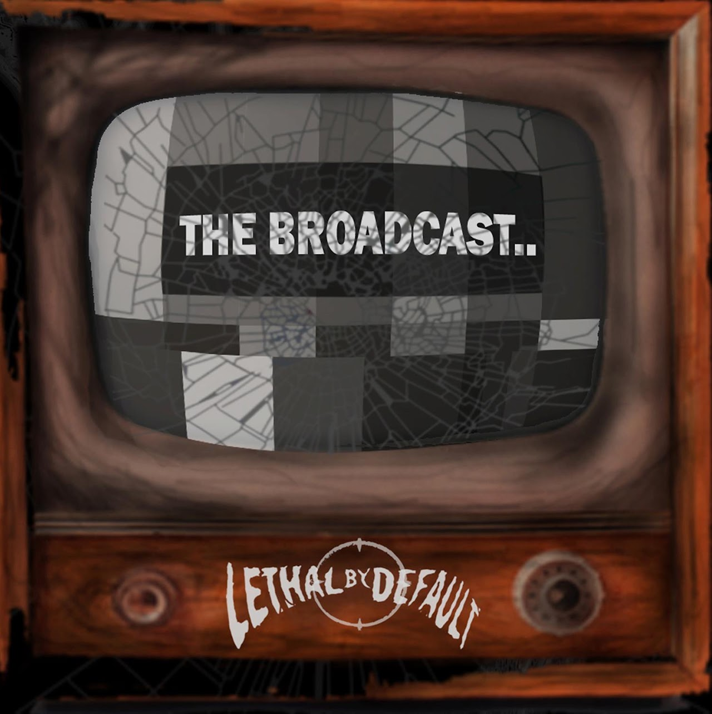

Home
Albums
Videos
Photos
Articles
Home
/
Albums
/
Lethal By Default Albums
/
The Broadcast
The Broadcast

The Broadcast
Select a track to play
01. The Mechanosphere
02. Man in The Moon
03. Day 10,909
04. The Homeless Must Go
05. Who Am I
06. The Sky's The Limit
Remastered Version
Select a track to play
01. The Mechanosphere (Remaster)
02. Man in The Moon (Remaster)
03. Day 10,909 (Remaster)
04. The Homeless Must Go (Remaster)
05. Who Am I (Remaster)
06. The Sky's The Limit (Remaster)